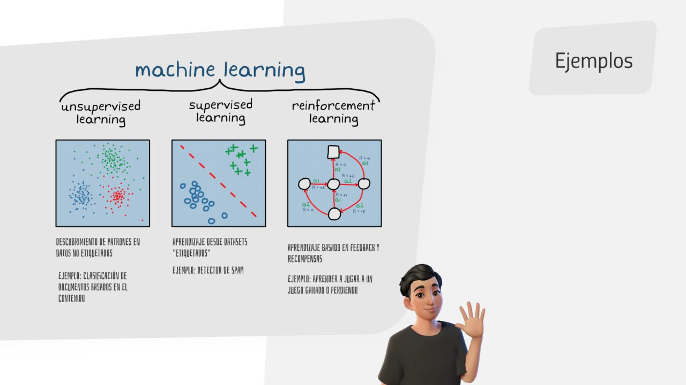
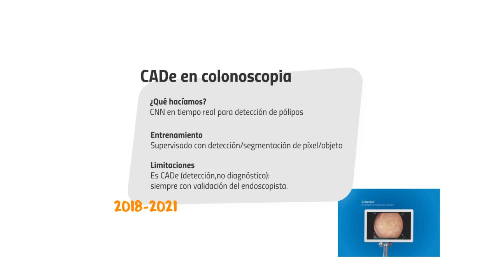
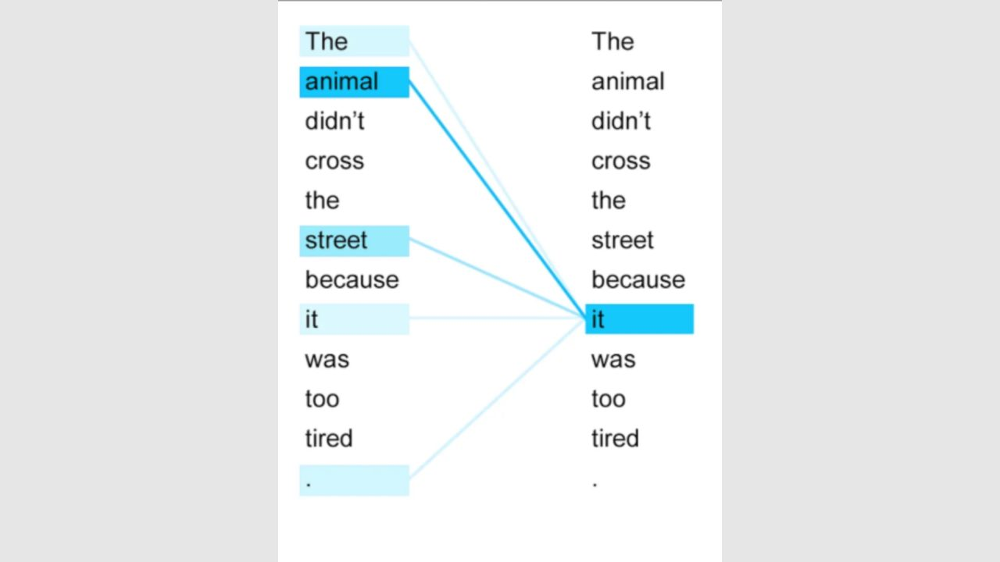
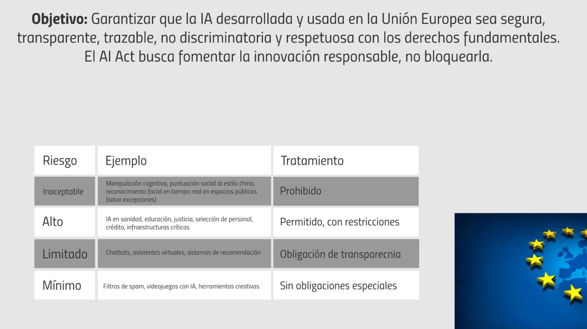

Resumen
La IA es más antigua de lo que parece y avanza más rápido de lo que intuimos
La sesión abre la segunda edición del curso. Tras la bienvenida de la dirección (con un mensaje claro: dominar la IA es una necesidad, no una opción, y el médico que la use bien superará al que no la use), Javier Fuentes recorre en siete bloques los cimientos de la disciplina.
Arranca con una provocación: en las últimas semanas un modelo no publicado de OpenAI ha resuelto uno de los siete problemas del milenio (Navier-Stokes), algo que la mayoría de expertos situaba, como pronto, en 2050. Con esa velocidad como telón de fondo, define qué es la IA, la distingue del software clásico, explica la "cebolla" IA → machine learning → deep learning y las tres formas en que una máquina aprende (supervisado, no supervisado, refuerzo). La práctica hace tangible el aprendizaje supervisado: con Teachable Machine y recortes de colonoscopias reales, la clase etiqueta imágenes y entrena en directo un clasificador pólipo / mucosa normal.
La segunda mitad repasa décadas de IA pre-generativa en digestivo (CAD heurístico, NLP clínico, CADe en colonoscopia, fenotipado de EII, OMOP, Savana), explica qué cambió en 2017 con los transformers y el mecanismo de atención, por qué los modelos generativos son no deterministas y multimodales, y qué tres factores (datos, cómputo y nuevas arquitecturas) explican que la revolución ocurra ahora. Cierra con las limitaciones (alucinación, sesgos, falta de datos, caja negra), las cinco preguntas éticas, el AI Act europeo y las reglas concretas para el uso de IA en sanidad.
Si solo te llevas una frase
Los modelos aprenden patrones a partir de ejemplos. Si el dato no representa la realidad, el modelo tampoco. Y en sanidad: la IA es apoyo a la decisión, nunca sustituto de la responsabilidad clínica.
Ideas fuerza
Doce conceptos para fijar
- La IA imita funciones cognitivas humanas.Percepción, comunicación, aprendizaje y creatividad. El término es de los años 50 y bajo su paraguas cabe desde la centralita del banco hasta GPT-6.
- Software clásico vs. IA.El software clásico ejecuta un algoritmo para problemas conocidos con solución analítica. La IA aprende de entradas y salidas para aproximar sistemas que no sabemos describir con una fórmula, como el lenguaje humano.
- La cebolla: IA ⊃ machine learning ⊃ deep learning.El machine learning usa matemáticas y estadística para aprender de datos. El deep learning son redes neuronales muy densas, la técnica detrás de la visión artificial y de los modelos de lenguaje.
- ANI, AGI, ASI.IA estrecha (Deep Blue solo sabe jugar al ajedrez), IA general (inteligencia y versatilidad humanas; el debate sobre si ya estamos ahí está abierto) y superinteligencia (será la AGI quien la construya, por eso el salto puede ser rápido).
- Tres formas de aprender.No supervisado (el modelo agrupa por su cuenta), supervisado (aprende de ejemplos etiquetados: spam, captchas, pólipos) y por refuerzo (reglas + objetivo + prueba y error: AlphaZero, AlphaFold, el robot que aprende a andar en una hora). Los LLM combinan las tres.
- En digestivo llevamos décadas usando IA sin llamarla así.CAD por reglas en cápsula (1999-2008), NLP clínico con cTAKES (2006-2014), datasets abiertos de pólipos (2015-2018), CADe en colonoscopia como GI Genius (2018-2021), fenotipado y predicción de recaídas en EII, modelo OMOP y Savana para real world evidence.
- La IA generativa crea contenido único y nuevo.Es una categoría del machine learning: aprende los patrones de un tipo de contenido y genera contenido similar. Cada respuesta es original, lo que inutiliza los detectores de plagio clásicos.
- No determinista por diseño.A la misma pregunta responde distinto cada vez porque muestrea de una distribución de probabilidad. Eso la hace natural y creativa, y también es la raíz de la alucinación.
- 2017: "Attention Is All You Need".Google propone los transformers y el mecanismo de atención: el significado de una palabra depende de su contexto ("hoy estoy muy perro"). OpenAI escala la idea y entre GPT-2 y GPT-3 emergen capacidades inesperadas como el razonamiento causal.
- Escalado y niveles de madurez.Chatbots → razonadores (o1, octubre 2024, cadena de pensamiento) → agentes → innovadores → organizaciones. La hipótesis del escalado: más datos, más cómputo y más energía dan más inteligencia. Hoy la carrera es de infraestructura: acero, silicio y energía.
- Cuatro limitaciones que no desaparecen.Alucinación (respuesta plausible pero falsa; cae del 10 % al <1 % pero exige verificar), sesgos (de entrenamiento, sistémicos y arbitrarios por filtros comerciales o políticos), falta de datos (dato sintético, exploración autónoma) y caja negra (modelos más potentes a cambio de menos explicabilidad).
- Regulación: la IA clínica es de alto riesgo.El AI Act define cuatro niveles. Sanidad está en "alto": permitido con restricciones. En España, la AESIA (A Coruña) supervisará y sancionará. Regla práctica: nunca datos de pacientes en herramientas generalistas; apoyo sí, decisión clínica no.
Recorrido de la sesión
Los siete bloques del mapa
La presentación se organiza como un tablero con siete paradas. Aquí está lo esencial de cada una, con los ejemplos que se usaron en clase.
Bloque 1 Presentación
- Grigori Perelman y los problemas del milenio. Solo un humano había resuelto uno (Poincaré, 2002). Hace unos días un modelo interno de OpenAI resolvió Navier-Stokes con unos 10.000 agentes trabajando 88 horas. Hay rumores fundados de que Hodge y Birch–Swinnerton-Dyer están cerca.
- Gráfica METR. Mide la duración de la tarea humana que un modelo puede completar: de segundos en 2023 a 16 horas con GPT-6 Astra y unas 80 horas con el modelo interno "Bel". La inteligencia de la IA es "espigada": sobresaliente en unas tareas y torpe en otras.
- FrontierMath saturado. Del 8 % (o4-mini, abril 2025) al 100 % (GPT-6 Astra) en año y medio. Los humanos somos malos entendiendo exponenciales; por eso conviene cautela sin alarmismo. Amodei: estamos en la "adolescencia" de la tecnología.
- Programa y equipo. Ocho módulos, preguntas por el Q&A de Zoom, formulario de dudas entre sesiones y proyecto final opcional.
Bloque 2 La revolución en ciernes
- La predicción de Sam Altman (2021). La IA abarataría antes el trabajo intelectual que el físico, al contrario de lo esperado. ¿Pueden las máquinas ser creativas? Hace cinco años nadie lo creía; hoy lo imitan tan bien que la pregunta incomoda.
- Definición y cebolla. IA como imitación de funciones cognitivas; machine learning como su rama más fructífera; deep learning como redes neuronales densas.
- ANI / AGI / ASI y la portería que se mueve: GPT-6 Astra habría sido considerado AGI hace diez años.
- Cómo aprenden las máquinas. Demo de la red que reconoce dígitos manuscritos (un trazo pasa de "1" a "4" a "9" según se dibuja) y vídeo del robot cuadrúpedo de Unitree que, sin controlador, aprende a andar por refuerzo en una hora, como un bebé que quiere alcanzar un juguete.

Práctica en vivo Entrenamos un detector de pólipos
Con Teachable Machine (Google) se crean dos clases, Pólipo y Mucosa normal. La clase decide caso a caso dónde va cada imagen de la carpeta para_etiquetar (la número 3 dividió opiniones), se añaden unas 50 imágenes etiquetadas por clase, se entrena en un minuto y se prueba con imágenes que el modelo nunca vio. El test 5, sutil incluso para el ojo humano, falla: con 50 muestras por clase el dataset es pequeño. Un gato obtiene "mucosa normal 91 %": es un modelo especialista, solo sabe hacer una cosa. GI Genius funciona con esta misma intuición, mucho mejor entrenado. Guía paso a paso más abajo.
Bloque 3 IA en Digestivo: un recorrido por el tiempo
- Modelos pre-generativos del día a día. Regresión lineal, reconocimiento de imágenes, Face ID (puntos de referencia faciales; fallaba con mascarilla), predicción de series temporales (precio de la luz, hora de llegada en Glovo), motores de recomendación (Netflix personaliza incluso el tráiler).
- Imagen en endoscopia y cápsula (1999-2008). CAD heurístico por reglas de color y textura; sin entrenamiento, poca flexibilidad.
- NLP clínico (2006-2014). cTAKES extrae conceptos de historias clínicas; supervisado + reglas; alta precisión solo en dominios acotados.
- Detección de pólipos (2015-2018). Datasets abiertos y segmentación píxel a píxel; el etiquetado experto es muy costoso.
- CADe en colonoscopia (2018-2021). Redes convolucionales en tiempo real (GI Genius). Es detección, no diagnóstico: siempre con validación del endoscopista.
- Fenotipado y predicción en EII (2015-2021). Regresión y clasificación sobre HCE y variables temporales para predecir recaídas en Crohn; requiere validación clínica.
- Infraestructura de datos. OMOP/OHDSI como modelo común federado; SNOMED CT como terminología; Savana convierte texto de HCE en real world evidence con foco en cumplimiento.

Bloque 4 IA Generativa
- Qué es. Una categoría del machine learning que aprende los patrones de un tipo de contenido (texto, imagen, audio, vídeo) y genera contenido nuevo de características similares. Matemáticas y estadística, nada esotérico.
- No determinismo. Misma pregunta, respuestas distintas. Ventaja: naturalidad. Coste: detectores de IA poco fiables y complacencia comercial ("dime la verdad aunque no me guste" se corrige vía prompt, se verá en el módulo 2).
- Multimodalidad. Texto→texto, texto→imagen (DALL·E), imagen→texto (GPT Vision)… Cada dupla es una tipología con sus herramientas; las generalistas ya las combinan.
- Transformers y atención (2017). El significado de una palabra depende de las que la rodean. De GPT-2 (1.500 millones de parámetros) a GPT-3 (175.000 millones) emergen capacidades no previstas: el ejemplo del vaso volcado y la pelota de ping-pong.
- Cinco niveles de OpenAI. Chatbots (2024) → razonadores (o1, "October first") → agentes → innovadores (ya ocurre) → organizaciones enteras operadas por agentes.
- Razonamiento diagnóstico. Estudio de 2024: o1-preview supera a GPT-4 y a médicos con recursos convencionales, con una dispersión mucho menor que la humana. Hoy está más que superado.

Bloque 5 Alcance y limitaciones
- Por qué ahora. Más datos (internet), más cómputo (el ordenador del Apolo tenía la memoria de un cuarto de foto de iPhone) y nuevas arquitecturas. La energía es el último cuello de botella: minirreactores nucleares y solar junto a los centros de datos.
- Batalla de infraestructura. CapEx trimestral 2024: Microsoft 76, Amazon 66, Google 53, Meta 34 mil millones de dólares. Las GPU de Nvidia como "el nuevo oro".
- Hipótesis del escalado (Amodei). 100 M$ → estudiante de secundaria; 1.000 M$ → universitario; 10.000 M$ → graduado brillante; 100.000 M$ → premio Nobel. Estamos entre el tercero y el cuarto.
- Alucinación. Respuesta plausible pero falsa. Claude 3 Opus ~10 %, GPT-4 1,8 %, Opus 4.8 / GPT-5 <1 %. Se equivocan por diseño; hay que revisar y apoyarse en referencias.
- Sesgos. De entrenamiento (culturales), sistémicos y arbitrarios (filtros de salida: DeepSeek y Tiananmén; publicidad futura en las respuestas).
- Falta de datos. Datasets abiertos, data augmentation, transfer learning, datos sintéticos (pacientes sintéticos en enfermedades raras), robots que capturarán el mundo físico.
- Caja negra. El ejemplo de la hipoteca denegada sin explicación. Dilema actual: técnicas recursivas dan modelos más capaces pero inexplicables. Europa exige explicabilidad; otros no.
Bloque 6 Ética y regulación
- Las tres leyes de Asimov como punto de partida, y cinco preguntas nuevas: ¿quién decide? (siempre un humano responsable), ¿con qué datos? (nadie revela su receta; el caso YouTube y GPT-4), ¿para qué propósito? (servir o sustituir), ¿quién se beneficia? (el discurso del miedo también tiene intereses), ¿qué límites hay? (vigilancia masiva, manipulación de los feeds, armas autónomas).
- AI Act europeo. Objetivo: IA segura, transparente, trazable y no discriminatoria. Obligaciones: evaluación de conformidad previa, gestión de riesgos, gobernanza de datos, documentación, transparencia y explicabilidad, supervisión humana, robustez. Efecto colateral: herramientas como OpenEvidence o GPT-6 for Clinicians no están disponibles en Europa.
- Niveles de riesgo. Inaceptable (prohibido: manipulación cognitiva, puntuación social, reconocimiento facial en tiempo real), alto (sanidad, educación, justicia, crédito: permitido con restricciones), limitado (chatbots, recomendadores: transparencia), mínimo (spam, videojuegos).
- Salud. RGPD + reglamento de dispositivos médicos + AI Act. La IA clínica es alto riesgo; la de apoyo no. Nueva ley orgánica española aprobada en mayo con régimen sancionador; la AESIA será el organismo supervisor.

Bloque 7 Cierre y futuro
- Cuestionario en vivo con las ideas fuerza (recogido en la autoevaluación).
- Optimismo razonado. Frente al "Black Mirror" mediático haría falta un "White Mirror": cura de enfermedades, fusión nuclear, explosión de conocimiento. La esperanza del ponente: que la IA nos libere de lo que aburre para dedicar tiempo a lo que importa.
- Próxima sesión: modelos de lenguaje y prompting con Consuelo Verdú. Ven con tu ChatGPT, Gemini o Claude abierto.
Diapositivas clave
Las imágenes que conviene recordar
Selección de la presentación de 140 diapositivas. Haz clic para verlas a tamaño completo o descarga el PDF íntegro.
Herramientas y recursos
Lo que se usó, se citó o se anticipó
Esta es la lista prometida al final de la sesión. Las etiquetas indican coste orientativo y en qué módulo se trabajará cada herramienta con detalle.
Teachable Machine
Herramienta didáctica de Google para entrenar en el navegador un modelo supervisado de imagen, audio o postura sin programar.
En clase: detector pólipo / mucosa normal con imágenes de Kvasir-SEG. Sirve para entender la intuición detrás de GI Genius o para enseñar IA a residentes y estudiantes.
teachablemachine.withgoogle.comChatGPT (OpenAI)
El asistente generalista de referencia. GPT-6 Astra es hoy el mejor modelo comercial (16 h de horizonte de tarea en METR, FrontierMath saturado).
Recomendación del ponente a día de hoy si un médico solo va a pagar una suscripción. Hace dos meses era Claude: el podio cambia cada pocos meses.
chatgpt.comClaude (Anthropic)
Competidor directo de ChatGPT. Anthropic, dirigida por Dario Amodei, es autora de la hipótesis del escalado citada en la sesión.
Referencia en clase: Claude 3 Opus alucinaba ~10 %; Opus 4.8 está por debajo del 1 %.
claude.aiGemini (Google)
El modelo de Google, heredero directo de la arquitectura transformer que la propia compañía publicó en 2017.
Para la próxima sesión: vale cualquiera de los tres (ChatGPT, Claude o Gemini) abierto en una segunda pantalla.
gemini.google.comMicrosoft Copilot
El asistente que muchos hospitales tienen licenciado dentro de Microsoft 365.
Cautela: que pueda manejar datos sensibles de pacientes depende del contrato del hospital con Microsoft. Pregunta a IT; si hay dudas, anonimiza en local antes de subir nada.
copilot.microsoft.comGI Genius (Medtronic)
Sistema CADe de detección de pólipos en tiempo real durante la colonoscopia, basado en redes convolucionales supervisadas.
En clase: ejemplo de que el detector casero de Teachable Machine y un dispositivo comercial comparten la misma intuición, con datos y cómputo muy distintos. Detección, no diagnóstico.
GI GeniusOpenEvidence
Buscador clínico con IA que responde citando el paper del que extrae cada afirmación.
Aviso: ha dejado de operar en Europa por las obligaciones del AI Act. En el módulo 3 se explicará cómo acceder y qué alternativas hay.
openevidence.comConsensus
Motor de búsqueda científica con IA que sintetiza la evidencia y enlaza las fuentes.
Por qué importa: la mejor defensa contra la alucinación es verificar las fuentes; estas herramientas te dan el paper para contrastarlo.
consensus.appKvasir-SEG (Simula)
Dataset abierto de imágenes de colonoscopia con pólipos segmentados, de uso docente e investigador.
En clase: origen de los recortes usados en la práctica. Ejemplo de los datasets abiertos (2015-2018) que impulsaron la detección de pólipos.
datasets.simula.no/kvasir-segDeepMind: AlphaZero, AlphaGo, AlphaFold
Los tres ejemplos de aprendizaje por refuerzo de la sesión: descubrir el jaque pastor por fuerza bruta, inventar jugadas nuevas en Go y predecir el plegado de proteínas (Nobel de Química 2024).
Para curiosos: el documental "AlphaGo" (2017) cuenta la historia de forma muy accesible.
deepmind.googlecTAKES · OMOP/OHDSI · SNOMED CT · Savana
El ecosistema de la IA pre-generativa sobre texto clínico: extracción de conceptos (cTAKES), modelo común de datos (OMOP), terminología (SNOMED CT) y real world evidence desde la HCE (Savana).
Idea clave: sin datos estructurados, interoperables y bien anotados no hay IA clínica que valga.
ohdsi.orgEU AI Act · AESIA
El reglamento europeo de IA con sus cuatro niveles de riesgo, y la Agencia Española de Supervisión de la Inteligencia Artificial (A Coruña), que supervisará y sancionará en España.
Para el digestivo: IA clínica = alto riesgo. Guía de Sanidad de este año: apoyo permitido con revisión profesional y datos anonimizados.
artificialintelligenceact.euPráctica guiada
Entrena tu propio detector de pólipos en 10 minutos
Reproduce en casa el ejercicio de la sesión. Necesitas un navegador (Chrome funciona mejor) y el material descargable. No hace falta cuenta ni instalar nada. No hay que entregar nada: es para entender, no para evaluar.
- Descarga y descomprime el material de la práctica. Contiene tres carpetas:
para_etiquetar(20 casos),entrenamiento_etiquetado(pólipo / mucosa normal, ~50 imágenes cada una) ytest(10 imágenes que el modelo no verá durante el entrenamiento). - Entra en Teachable Machine → Get Started → Image Project → Standard image model.
- Renombra las dos clases: Pólipo y Mucosa normal. (En clase se debatió "sin pólipo" vs. "mucosa normal": la etiqueta debe describir lo que hay, no lo que falta.)
- Etiquetado en vivo. Abre
para_etiquetary decide, caso a caso, a qué clase va cada imagen. Arrástrala a la clase correspondiente con Upload. Anota en cuáles dudas: son las que también le costarán al modelo. - Añade el resto del entrenamiento: arrastra el contenido de
entrenamiento_etiquetado/polipoa "Pólipo" y el deentrenamiento_etiquetado/mucosa_normala "Mucosa normal". Cuantos más datos de calidad, mejor. - Pulsa Train Model. Tarda alrededor de un minuto: Google ajusta una red neuronal preentrenada con tus ejemplos (eso es transfer learning).
- En Preview cambia Webcam por File y arrastra una a una las imágenes de
test. Antes de mirar el resultado, haz tu propia predicción. - Ponlo a prueba: sube una foto de un gato o un paisaje. Obtendrás un porcentaje con aplomo y sin sentido. Es un modelo especialista: solo sabe distinguir lo que le enseñaste.
¿Por qué falla donde falla?
En clase el test 5 (un pólipo sutil) se clasificó como mucosa normal. Con ~50 muestras por clase el dataset es pequeño y poco variado. Preguntas para reflexionar: ¿qué pasaría si todas las imágenes de entrenamiento fueran muy parecidas entre sí? ¿Y si etiquetamos mal el 10 % de los casos? ¿Cuántas imágenes crees que necesitó GI Genius? El modelo solo sabe lo que ha visto: si el dato no representa la realidad, el modelo tampoco.
Reglas de oro
Uso de IA en sanidad: lo que nos importa
Las pautas prácticas con las que cerró la sesión, alineadas con la guía de Sanidad de este año, el RGPD y el AI Act.
Nunca datos de pacientes en herramientas generalistas
Ni en tu ChatGPT personal ni en la cuenta gratuita de casa. Ni con nombre, ni con datos que permitan identificar.
La IA como apoyo, sí
Resumir artículos, preparar borradores, tareas administrativas y ofimáticas del día a día. Siempre con revisión profesional de lo que devuelve.
Anonimiza antes de subir
Para investigación, anonimiza en tu equipo (con una tabla de correspondencia si necesitas revertirlo) y procesa después. Cómo hacerlo, en el módulo 3.
La respuesta nunca es la decisión clínica
El responsable de la decisión es siempre un profesional. La IA es una herramienta de apoyo a la decisión, no un decisor.
Verifica las fuentes
Los modelos alucinan por diseño, cada vez menos, pero alucinan. Pide referencias y contrástalas; usa herramientas que citan el paper.
Si dudas de la herramienta corporativa, no la uses con datos sensibles
Copilot u otras licencias de hospital: pregunta a IT por el marco contractual. Hasta tener certeza, anonimiza en local.
Preguntas del chat
Lo que preguntaron los alumnos y lo que se respondió
¿Es verdad que la IA está diseñada para responder siempre lo que nos gusta?
Sí, en buena medida y por razones comerciales: los proveedores hacen modelos agradables para no perder usuarios. Cada vez son algo más críticos, pero la complacencia existe. Se corrige vía prompt: "responde de manera brutalmente honesta; si no tienes datos para respaldarlo, dime que no puedes". Se verá en el módulo 2.
¿Las máquinas solo aprenden de lo que les damos los humanos?
Ha sido así hasta ahora, pero hay dos dinámicas nuevas. Primera, el dato sintético: ya hay startups que sintetizan pacientes imaginarios para ensayos en enfermedades raras con poca N (ensayos in silico). Segunda, la exploración autónoma: como AlphaZero descubriendo jaques o AlphaFold prediciendo pliegues, la máquina puede recorrer espacios de búsqueda enormes y encontrar cosas que nosotros no habíamos encontrado.
¿Puedo configurar una IA para revisar información sensible offline?
Sí. En el módulo 4 se verá cómo usar modelos open source en local, de modo que los datos no salgan de tu máquina. Es una de las peticiones más frecuentes del curso y se cubrirá con detalle.
¿Qué IA recomiendas pagar hoy a un médico?
A día de hoy, ChatGPT: GPT-6 es excelente y su generación de imágenes es sobresaliente. Hace dos meses la recomendación era Claude. El podio cambia cada pocos meses, así que la respuesta caduca pronto.
¿Podemos usar el Copilot corporativo del hospital con datos de pacientes?
Depende del marco contractual que el hospital tenga firmado con Microsoft, y el ponente ha oído respuestas distintas en distintos centros. Regla prudente: si no hay certeza, no. Anonimiza en tu equipo y luego trabaja con la herramienta.
¿Y la energía y el agua que consume la IA?
Opinión del ponente: el consumo es real (entrenar y usar los modelos es intensivo en cómputo) pero el debate está sesgado. El uso anual medio de una persona en ChatGPT rondaría los 8 kWh, menos que un trayecto en coche al colegio. Nadie cuestiona el consumo de TikTok o del streaming nocturno. La refrigeración por agua es en circuito cerrado. La energía sí es el cuello de botella final: nuclear y solar junto a los centros de datos, y ojalá fusión.
¿Qué es exactamente la "caja negra"?
Una red neuronal entrenada hace tantos cálculos internos que, aunque la salida sea correcta, un humano no puede rehacer el razonamiento a mano ni vincularlo a una explicación comprensible. Sabemos construir la máquina, pero cuando funciona la respuesta es un proceso casi emergente. Un alumno apuntó la analogía: con el cerebro humano pasa lo mismo, pensamos sin saber exactamente cómo.
¿Cuándo dice la IA que dejará de necesitar al ser humano?
Un alumno preguntó a un modelo y respondió "entre 2030 y 2032". El ponente: nadie lo sabe. Su esperanza personal es que la IA le libere de las tareas que aburren (PowerPoints, correos) para dedicarse a estudiar, escribir e investigar.
¿Se podrán ver las sesiones grabadas?
Los vídeos estarán en la plataforma de e-learning junto a estas fichas. La organización confirmará por correo las condiciones. Recuerda que para la acreditación cuenta la asistencia en directo a las ocho sesiones.
Glosario
Los términos que aparecieron en la sesión
- Inteligencia artificial (IA)
- Capacidad de una máquina de imitar funciones cognitivas humanas: percepción, comunicación, aprendizaje, creatividad.
- Machine learning
- Aprendizaje automático. Técnicas matemáticas y estadísticas para que un sistema aprenda de datos en vez de seguir reglas programadas.
- Deep learning
- Aprendizaje profundo. Redes neuronales con muchas capas; base de la visión artificial y de los modelos de lenguaje.
- Red neuronal y parámetros
- Artefacto matemático inspirado en las conexiones del cerebro. Los parámetros (pesos) son los números que la definen: GPT-3 tenía 175.000 millones.
- ANI / AGI / ASI
- IA estrecha (una sola tarea), general (inteligencia y versatilidad humanas) y superinteligencia (muy superior a todos los humanos juntos).
- Aprendizaje supervisado
- El modelo aprende de ejemplos etiquetados por humanos (spam / no spam, pólipo / mucosa normal).
- Aprendizaje no supervisado
- El modelo encuentra estructura por su cuenta: agrupa, segmenta, reduce dimensiones.
- Aprendizaje por refuerzo
- El modelo recibe reglas y un objetivo y aprende por prueba, error y recompensa (AlphaZero, el robot que aprende a andar).
- IA generativa
- Categoría del machine learning que aprende los patrones de un contenido y genera contenido nuevo de características similares.
- No determinismo
- Misma entrada, salidas distintas. Los modelos generativos muestrean de una distribución de probabilidad; es intencionado.
- Multimodal
- Modelo que acepta y produce varios tipos de contenido: texto, imagen, audio, vídeo.
- Transformer y atención
- Arquitectura de 2017 ("Attention Is All You Need") cuyo mecanismo de atención relaciona cada palabra con su contexto para captar el significado.
- LLM
- Large language model, gran modelo de lenguaje: transformer entrenado con enormes volúmenes de texto (GPT, Claude, Gemini, Llama).
- Capacidades emergentes
- Habilidades no programadas que aparecen al escalar el modelo, como el razonamiento causal entre GPT-2 y GPT-3.
- Modelo razonador / cadena de pensamiento
- Modelo que dedica más cómputo a explorar y encadenar pasos antes de responder (o1, octubre 2024). Más cómputo en la respuesta, mejor respuesta.
- Agente
- Modelo capaz de actuar sobre el mundo exterior (correo, sistemas, herramientas) para completar procesos complejos. Módulo 6.
- Benchmark
- Prueba estandarizada para medir capacidades (FrontierMath, METR). Se saturan cada vez más rápido.
- Alucinación
- Respuesta bien escrita, con aplomo y falsa. Consecuencia del muestreo probabilístico; se mitiga verificando fuentes.
- Sesgo
- Desviación sistemática en las respuestas: por los datos de entrenamiento, por el propio sistema o por filtros arbitrarios del proveedor.
- Caja negra / explicabilidad
- Imposibilidad práctica de explicar por qué un modelo da una salida concreta. La explicabilidad es un requisito del AI Act.
- Dato sintético
- Datos generados artificialmente para entrenar modelos cuando los reales escasean (pacientes sintéticos en enfermedades raras).
- Transfer learning
- Reaprovechar un modelo preentrenado y ajustarlo con pocos datos propios. Es lo que hace Teachable Machine en un minuto.
- CAD / CADe
- Computer-aided detection: sistemas que señalan lesiones en la imagen endoscópica en tiempo real. Detección, no diagnóstico.
- NLP clínico
- Procesamiento de lenguaje natural sobre texto de historias clínicas para extraer conceptos (cTAKES, Savana).
- RWE / OMOP
- Real world evidence: evidencia a partir de datos asistenciales. OMOP es el modelo común de datos que permite federarlos.
- GPU
- Chips (Nvidia GB200 y similares) optimizados para entrenar y ejecutar modelos; el cuello de botella físico de la industria.
- Hipótesis del escalado
- Idea de que el avance de la IA depende de infraestructura (datos, cómputo, energía) más que de nuevas técnicas.
- AI Act
- Reglamento europeo de IA. Cuatro niveles de riesgo; sanidad en "alto", permitido con restricciones.
- AESIA
- Agencia Española de Supervisión de la Inteligencia Artificial, con sede en A Coruña. Organismo supervisor y sancionador.
Autoevaluación
El cuestionario con el que cerró la sesión
Ocho preguntas para fijar ideas. No cuenta para la acreditación (el cuestionario oficial es único, al final de los ocho módulos). Elige una opción y verás la explicación.
1 ¿Qué necesita un modelo de aprendizaje supervisado para entrenarse?
2 Un modelo de lenguaje responde…
3 Hemos entrenado un clasificador. ¿Qué pasaría si solo usamos imágenes muy parecidas entre sí?
4 Una alucinación de la IA es…
5 La mejor defensa frente a la alucinación es…
6 Según el AI Act europeo, un sistema de IA con finalidad diagnóstica es de riesgo…
7 ¿Puedo pegar el informe de un paciente con nombre y apellidos en mi ChatGPT personal?
8 ¿Qué organismo supervisará y sancionará el uso de la IA en España?
Referencias
Para profundizar
- Vaswani, A. et al. (2017). Attention Is All You Need. El paper de Google que introdujo los transformers.
- Brodeur, P. G. et al. (2024). Superhuman performance of a large language model on the reasoning tasks of a physician. El estudio de o1-preview frente a médicos citado en la sesión.
- METR. Measuring AI ability to complete long tasks. La gráfica del horizonte temporal de tareas.
- Epoch AI. FrontierMath benchmark.
- Clay Mathematics Institute. Los problemas del milenio.
- Amodei, D. (2024). Machines of Loving Grace. El ensayo optimista del CEO de Anthropic.
- Unión Europea. Reglamento de Inteligencia Artificial (AI Act), explorador por artículos.
- Jha, D. et al. (2020). Kvasir-SEG: A Segmented Polyp Dataset. Origen de las imágenes de la práctica.
- Documental AlphaGo (2017), sobre el aprendizaje por refuerzo aplicado al Go.
- Asimov, I. Yo, robot (1950). Las tres leyes de la robótica.
Siguiente sesión
Prepárate para el Módulo 2
🗓️ Módulo 2 · LLMs y el arte de preguntar
Imparte Consuelo Verdú. Qué son los modelos de lenguaje, en qué se diferencian ChatGPT, Claude, Gemini y los modelos abiertos, y cómo escribir prompts y aportar contexto para obtener mejores respuestas. Se trabajará en vivo.
🖥️ Qué traer
- Ordenador, idealmente con dos pantallas: la clase en una y tu asistente en la otra.
- Una cuenta abierta en ChatGPT, Gemini o Claude (las versiones gratuitas sirven).
💬 Dudas entre sesiones
La organización enviará un formulario para recoger las preguntas que surjan al practicar. Se resolverán al inicio del módulo 2. También puedes escribir a formacion@sepd.es.